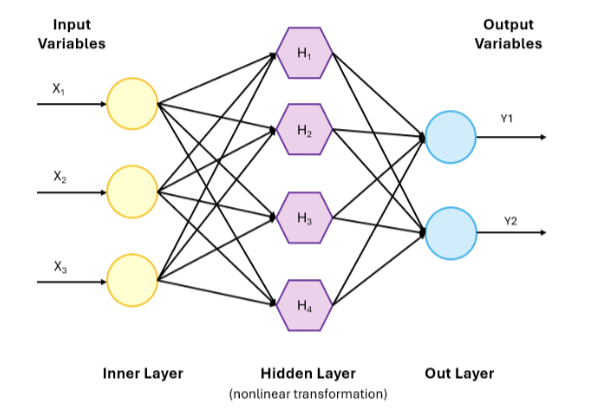

My First Machine Learning Project: What Worked and What Didn't in Predicting Severe Weather
June 15, 2026

Introduction
Severe weather events, such as extreme rainfall, strong winds, and snowstorms, can have major impacts on safety, infrastructure, and daily life. This project explores how machine learning can be used to better understand and predict these events using publicly available weather data.
This was my first full machine learning project, where I worked through the entire pipeline—from data preprocessing to model evaluation—using a Multi-Layer Perceptron (MLP) model.
Why I Chose an MLP Model
Weather systems are highly nonlinear, meaning small changes in atmospheric conditions can lead to very different outcomes. MLPs, which are neural networks with multiple hidden layers and nonlinear activation functions, are well suited for capturing these complex patterns.
The goal was not to replace traditional weather models, but to explore whether machine learning could serve as a complementary tool for identifying early signals of severe weather.
What Worked Well
One of the most rewarding outcomes was that the model successfully learned meaningful patterns from the data. It performed better than random chance when distinguishing between severe and non-severe weather.
Another key improvement came from addressing class imbalance. Severe weather events are rare, which initially caused the model to under-predict them. After applying SMOTE oversampling, the model became significantly better at detecting these rare events without losing overall accuracy.
Challenges I Didn’t Expect
1. Extreme Data Imbalance
The rarity of severe weather events made it difficult for the model to learn effectively. This highlighted the importance of preprocessing techniques like oversampling in real-world machine learning problems.
2. Computational Cost and Time
Training the model required more computational power than expected. Running experiments locally became slow, so I moved the workflow to Google Colab, which provided access to cloud-based GPUs and significantly improved training efficiency.
3. Model Interpretability
Understanding why the model made certain predictions was challenging. Neural networks combine features in complex ways, which improves accuracy but reduces interpretability. This revealed an important trade-off in machine learning.
Key Lessons Learned
This project showed that machine learning is not a plug-and-play solution. Model performance depends heavily on data quality, preprocessing, and computational resources.
It also emphasized that discussing limitations—such as data imbalance and interpretability—is just as important as reporting performance metrics.
Most importantly, this experience demonstrated how computer science and data science can be applied to real-world problems with meaningful impact.
Final Thoughts
This project was my first deep dive into applied machine learning research. It challenged me to think critically about data, model design, and computational constraints.
It strengthened my interest in exploring the intersection of computer science, data science, and Earth science, and motivated me to continue working on real-world, impactful problems.
Reference: